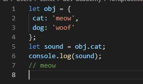
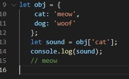

My background is in science so I like the analogy of the human body.
HTML is the skeleton where the structure of the body is formed. There's a bit that says what type of skeleton (!DOCTYPE) then the head, body, foot, etc. CSS is the styling, the way the body looks - the details enforcing what color hair is, what size a leg is, what padding is there! HTML can function without CSS however CSS needs something to style, just like hair color wouldn’t matter, if there was no head to begin with.
Imagine you driving to work. You’re already moving forward, or in a flow. Control flow is like a flow chart, it’s the order that a computer carries out the information in the script. Control flow would be like the process of you driving to work. Starting at home, driving there, and arriving at work. Loops are a type of control flow statement.
While driving to work, you know there are a certain number of traffic lights. Say there’s 7 sets before you can turn right into the road your work is on. You keep driving straight until you have passed the 7 sets of traffic lights.This would be the condition of passing 7 traffic lights has been met, so you can turn right into the road. If you reached a round about, you would continue around it until you came to the exit you need for that particular trip. It would be possible to keep going around and around until the condition (the right exit or a clear exit) was met. If you kept going around the round about, that would be like a loop - the instructions to keep going around would repeat.
When we visit a web page, we use a web browser to get there (Google Chrome) and what we see is an interpretation. The interpretation is created by a web browser using the DOM (the Document Object Model). The DOM is a tree-like structure which acts as an interface between the script document, and the web browser. When using Google Chrome, you can interact with the DOM by using DevTools which is a set of inbuilt developer tools to edit web pages. To get to DevTools, right click on the web page and select ‘inspect’ from the menu that pops up.
With arrays, data is stored within square [ ] brackets. You can access the data within the brackets by using the position of the data within the brackets, the index. Arrays are numbered from 0 upwards. This is called zero based indexing. Example
var breakfast = ['toast','milo','apple']
console.log(breakfast[2]);
In this example toast is at index 0, milo at 1, and apple at 2. So the console will log 'apple'.
Objects can be accessed through their properties using .dot notation or [bracket] notation.
Dot notation example: object.property

Bracket notation example: object [‘property’]

There are some differences with when you would use dot vs bracket notation. More info can be found here: Reference
Functions are reusable blocks of code. They group together statements to perform a certain task. They make writing code easier/shorter as you can use the function rather than using all the statements again and again.
Here is an example:
function greetWorld() {
console.log(‘Hello World’);
}
greetWorld();
This function will log the string “Hello World” to the console each time the greetWorld function is called.
back to Tech Blogs